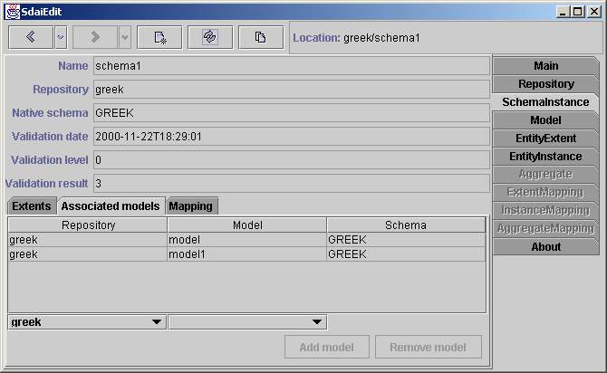
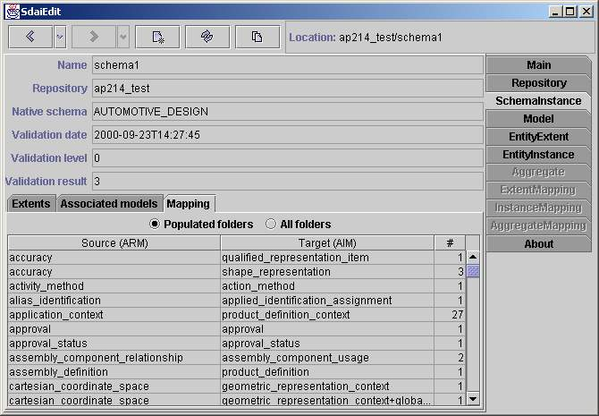

Schema Instance Page
This page shows the content of a
schema instance. A name of the schema instance,
a repository which the instance belongs to, a native schema name
and
validation
information are given in the upper part of page. There are three sub
tabs:
Extents,
Associated model and Mapping. The Extents and Mapping tabs are the same
as
in a
model page, but data are taken from
associated
models of this schema instance.
Extents
The content of all associated models
together are shown here. You can filter the table by using appropriate
radio button in the filtering line on the top section of the Extents tab. 'Populated'
will
show all entity data types which have more than zero entity data
type
values (column '#values'). 'All folders' will show all entity data
types.
And 'Exact folders' filter shows entity data types which have an
instance
(column '#instances').
Table
The table have four columns: Name,
Schema,
# values and # instances. Name
column
contains names of entity data types (name of entity definition).
Schema
column contains schema name of the entity data type. # values column
shows an amount of the entity data type values. #
instances
shows an amount of the instances of this entity data type. The
empty
cell instead of number in the # values
column declares that such entity
data
type value can not exist (entity data type is a complex). The
empty
cell instead of number in the #
instances column declares that such
instance
can not exist (entity data type is abstract).
The total
number
of entity data types, complex entity data types and instances are
represented on the bottom section of the Extent tab.
Associated Models

Associated models for the schema
instance are listed here.
Table
The table consists of three columns:
Repository, Model and Schema. In the Repository
column repositories for which models belongs to are listed. In the Model
column names of models are listed. In the Schema column - a native schema name
of
the model.
Editing Line
There are two combo boxes, associated
with the table columns, represented on the bottom section of the Associated models tab. You can
select a preferred repository in the first combo box. All
models
available for the repository appear in the second combobox. Models
which already present in the schema
instance
are marked with '*' symbol. After you choose one of them and press
'Add model'
button, the model will be added to this schema instance. If you want
to remove a model, you need to select it and press 'Remove model'
button.
Mapping

There are all AIM data in ARM
context (All ARM entity data types) listed.
If there is no ARM schema for this underlying schema, than 'No mapping
data'
will appear instead of the table. There are two filtering radio
buttons on the top section of the Mapping
tab.
The first one 'Populated folders' lists ARM entity data types
which
have any available AIM instance. And the second one 'All folders' lists
all
available
ARM entity data types.
Table
The table consists of three columns:
'Source (ARM)', 'Target (AIM)' and '#'. The Source (ARM) column represents names
of the ARM entity data type. The Target
(AIM) column represents names of the AIM
entity data type. Note. ARM entity data
types
can be mapped to several AIM entity data types. So there is a relation
'many
to many'. The # column shows
count of instances which are available for
entity data types of ARM and AIM.